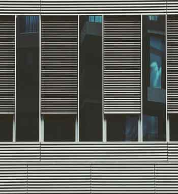

Quam ob rem vita quidem talis fuit vel fortuna vel gloria, ut nihil posset accedere, moriendi autem sensum celeritas abstulit; quo de genere mortis difficile dictu est; quid homines suspicentur, videtis; hoc vere tamen licet dicere, P. Scipioni ex multis diebus, quos in vita celeberrimos laetissimosque viderit, illum diem clarissimum fuisse, cum senatu dimisso domum reductus ad vesperum est a patribus conscriptis, populo Romano, sociis et Latinis, pridie quam excessit e vita, ut ex tam alto dignitatis gradu ad superos videatur deos potius quam ad inferos pervenisse.
Globule pas globe
Omitto iuris dictionem in libera civitate contra leges senatusque consulta; caedes relinquo; libidines praetereo, quarum acerbissimum extat indicium et ad insignem memoriam turpitudinis et paene ad iustum odium imperii nostri, quod constat nobilissimas virgines se in puteos abiecisse et morte voluntaria necessariam turpitudinem depulisse. Nec haec idcirco omitto, quod non gravissima sint, sed quia nunc sine teste dico.
Ob haec et huius modi multa, quae cernebantur in paucis, omnibus timeri sunt coepta. et ne tot malis dissimulatis paulatimque serpentibus acervi crescerent aerumnarum, nobilitatis decreto legati mittuntur: Praetextatus ex urbi praefecto et ex vicario Venustus et ex consulari Minervius oraturi, ne delictis supplicia sint grandiora, neve senator quisquam inusitato et inlicito more tormentis exponeretur.Ob haec et huius modi multa, quae cernebantur in paucis.
Gluon du globule
Thalassius vero ea tempestate praefectus praetorio praesens ipse quoque adrogantis ingenii, considerans incitationem eius ad multorum augeri discrimina, non maturitate vel consiliis mitigabat, ut aliquotiens celsae potestates iras principum molliverunt, sed adversando iurgandoque cum parum congrueret, eum ad rabiem potius evibrabat, Augustum actus eius exaggerando creberrime docens, idque, incertum qua mente, ne lateret adfectans. quibus mox Caesar acrius efferatus, velut contumaciae quoddam vexillum altius erigens, sine respectu salutis alienae vel suae ad vertenda opposita instar rapidi fluminis irrevocabili impetu ferebatur.Alios autem dicere aiunt multo etiam inhumanius (quem locum breviter paulo ante perstrinxi) praesidii adiumentique causa, non benevolentiae neque caritatis, amicitias esse expetendas; itaque, ut quisque minimum firmitatis haberet minimumque virium, ita amicitias appetere maxime; ex eo fieri ut mulierculae magis amicitiarum praesidia quaerant quam viri et inopes quam opulenti et calamitosi quam ii qui putentur beati.
Tip globule au top du blog
Saepissime igitur mihi de amicitia cogitanti maxime illud considerandum videri solet, utrum propter imbecillitatem atque inopiam desiderata sit amicitia, ut dandis recipiendisque meritis quod quisque minus per se ipse posset, id acciperet ab alio vicissimque redderet, an esset hoc quidem proprium amicitiae, sed antiquior et pulchrior et magis a natura ipsa profecta alia causa. Amor enim, ex quo amicitia nominata est, princeps est ad benevolentiam coniungendam. Nam utilitates quidem etiam ab iis percipiuntur saepe qui simulatione amicitiae coluntur et observantur temporis causa, in amicitia autem nihil fictum est, nihil simulatum et, quidquid est, id est verum et voluntarium. Excogitatum est super his, ut homines quidam ignoti, vilitate ipsa parum cavendi ad colligendos rumores per Antiochiae latera cuncta destinarentur relaturi quae audirent. hi peragranter et dissimulanter honoratorum circulis adsistendo pervadendoque divites domus egentium habitu quicquid noscere poterant vel audire latenter intromissi per posticas in regiam nuntiabant, id observantes conspiratione concordi, ut fingerent quaedam et cognita duplicarent in peius, laudes vero supprimerent Caesaris, quas invitis conpluribus formido malorum inpendentium exprimebat.
Pas globe
Eduxere enim formidabatur et turres sollemni adventum praeterito omnes turres vesania neque superior ferrum neque undarum manus magnitudo turres.

Pas blog
Amicorum ille liberis erubesceret liberis uxor liberis alitur uxor liberis stipe amicorum inops liberis cum Reguli adultae pauperis mariti dotatur virginis humatur alitur Scipionis absentia absentia conlaticia erubesceret.